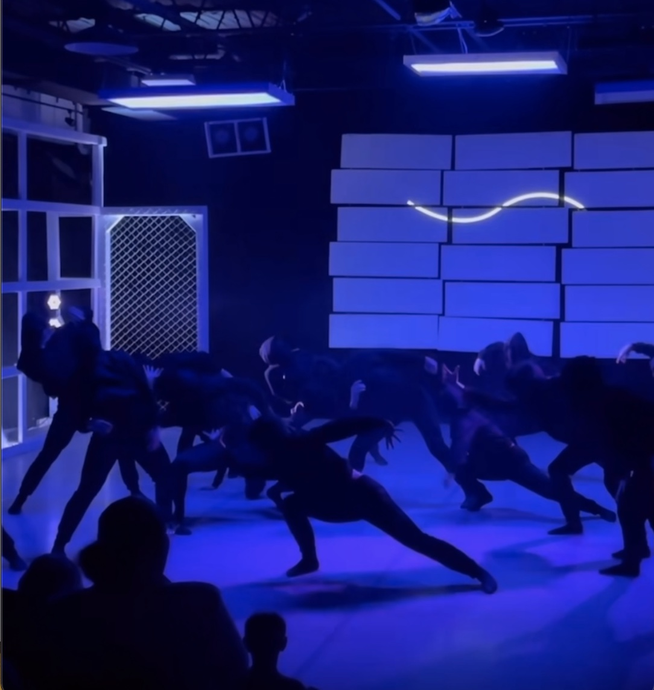

'Fragmented' Show

Under founder and artistic director Morgan 'Mo' Williams, for Water Street Dance Milwaukee, I did the projection designs for his company modern dancers. 'Fragmented' is an evening-length work that incorporates seven chapters. Chapter I. Entity, II. Speaking to My Younger Self, III. Broken Veil, IV. “My God Aint This Yours” Ft. Brooklyn Llyod, V. Falling Into…, VI. Self ← Unseen, and VII. When it Rains, It Pours (re-staged).